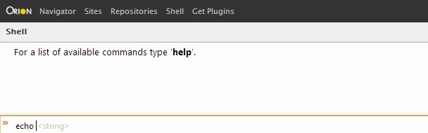
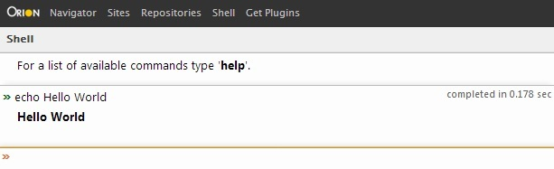

| orion.shell.command | ||
|---|---|---|
|
|
|
|
| Plugging into the shell | Updating this document | |
The orion.shell.command service is used to contribute commands to the Shell page. When the service is executed, an object containing the user-supplied argument values is passed to the service's callback method. The command then optionally returns a response (a return value) to be displayed in the Shell.
Implementations of orion.shell.command may define the following function:
The only context where a contributed command would not define a service method is to assist with the contribution of sub-commands. For example, to contribute commands "tar create" and "tar extract", a parent command "tar" without a service method must first be contributed.
Implementations of orion.shell.command define the following attributes:
The Shell page currently uses GCLI as its underlying shell widget, and consequently has adopted its syntax for parameter specification. For details on this syntax begin reading at the "## Default argument values" header in the GCLI Writing Commands doc. The basic parameter object attributes are:
The following sample plug-in contributes an "echo" command to the Shell:
<html>
<head>
<script src="http://orionhub.org/orion/plugin.js"></script>
<script>
var serviceImpl = {
callback: function(args) {
return "'" + args.string + "'";
}
};
var serviceProperties = {
name: "echo",
description: "Echo a string",
parameters: [{
name: "string",
type: "string",
description: "The string to echo back"
}]
};
var provider = new orion.PluginProvider();
provider.registerServiceProvider(
"orion.shell.command",
serviceImpl,
serviceProperties);
provider.connect();
</script>
</head>
</html>
When this plug-in is installed the user can use the "echo" command in the Shell. In the first image shown below a user is in the process of entering an echo command, and is shown a hint that argument "string" (the string to echo) is expected.

In the following image the echo command has executed and its result is shown in the output area.

|
|

|
|
| Plugging into the shell | Updating this document |